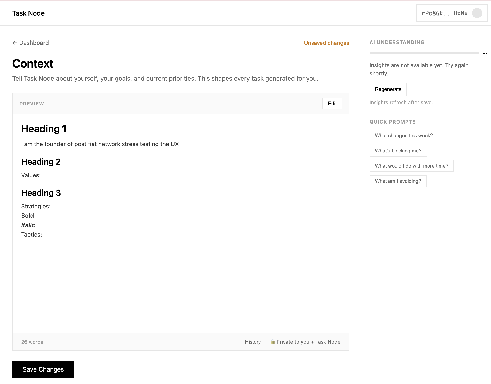
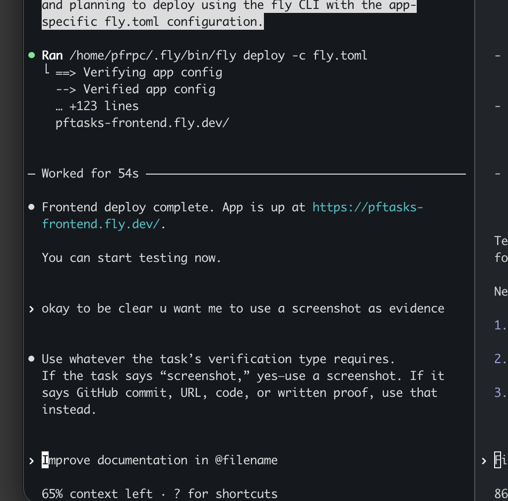
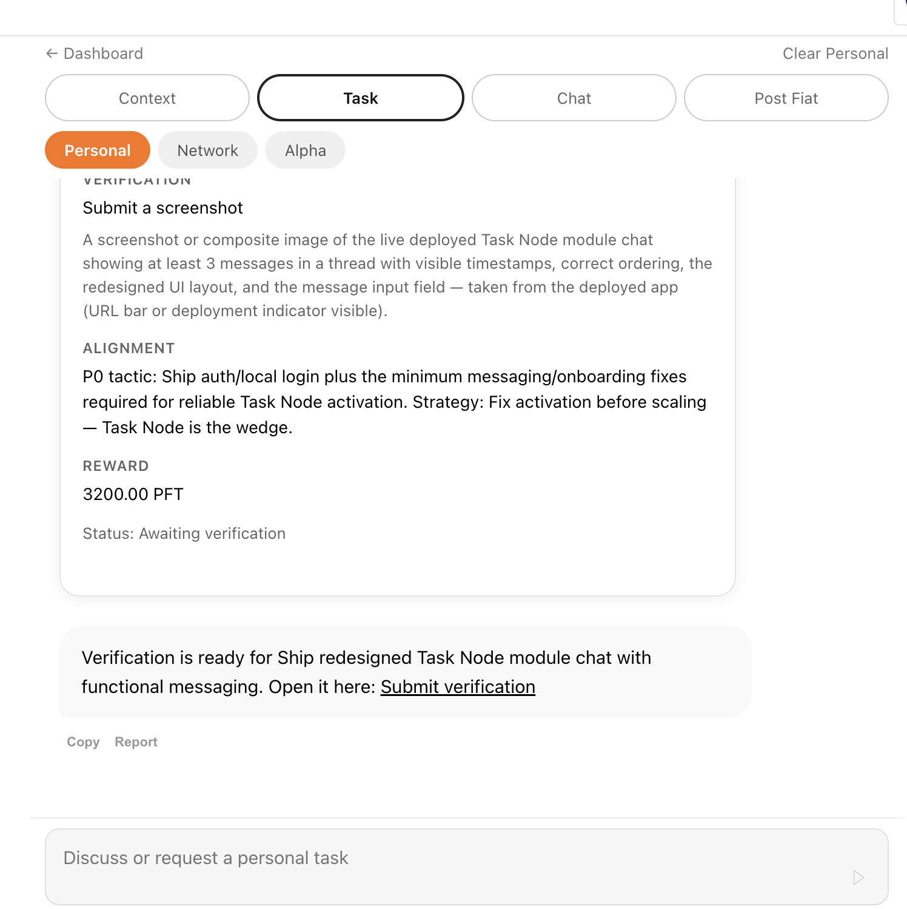
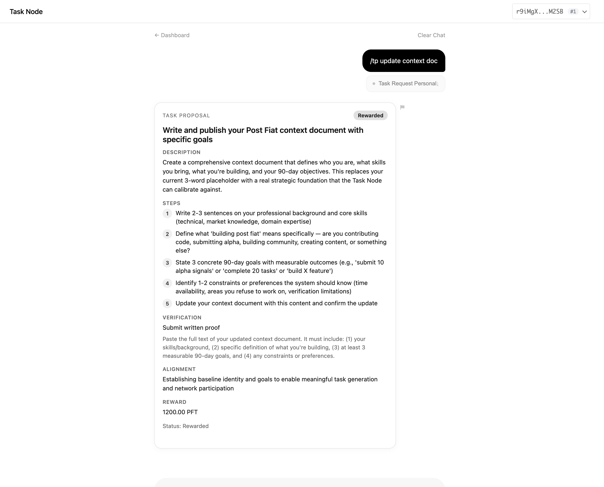
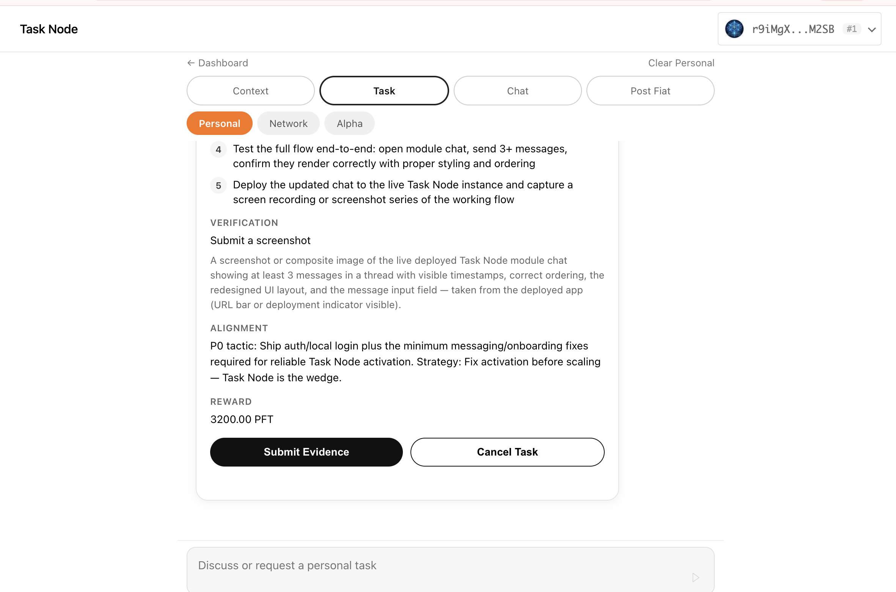

Full Rewrite
Redesign the context document after a scoped calibration conversation.
Human Harness — a manifesto in motion
Route cognition into one system. Ride the AI decision curve. Ship more than you thought possible.
Not anthropocentric
The goal is to attach human action and collective capital to accelerating AI decision quality.
Single system
Every question, trade, build, anxiety, and task routes through the same operating layer.
Prompt codex. Ship LOC.
Less native rumination. More precise prompts. More code shipped through agents.
Context is the OS
Values, strategy, constraints, workflows, and the self-model the AI is allowed to challenge.

Task engine
Not notes. Bounded artifacts with deadlines, evidence, verification, and PFT settlement.
Daily execution pressure: write, ship, call, test, submit evidence.
Artifact discipline
One task. One artifact. One verification path. Reality enters the loop.



Module arsenal
Not one chatbot. A rack of cognitive tools for different failure modes.
Redesign the context document after a scoped calibration conversation.

Field terminal
Wallet-linked coaching, trading journal, task history, and rolling memory in your pocket.
Collective compounding
Tasks create signal. Signal improves decisions. Decisions compound PFT-aligned capital.
Hive mind
Board agents produce sanctioned tasks before users ever ask what to do.
Real product loop
The user stops holding the plan in working memory. Context, chat, tasks, Codex, Telegram, evidence, rewards, and rewrites become one operating loop.
Failure modes
The model misses context or legible variables overpower human judgment.
The user asks for instruction, dislikes the implication, and negotiates with reality.
The user performs discipline instead of producing useful artifacts.
The system rewards motion instead of outcomes unless verification stays strict.
The AI should expose consequences and tradeoffs. It should not define the soul.
The harness
Route cognition. Compound action. Let the curve pull.